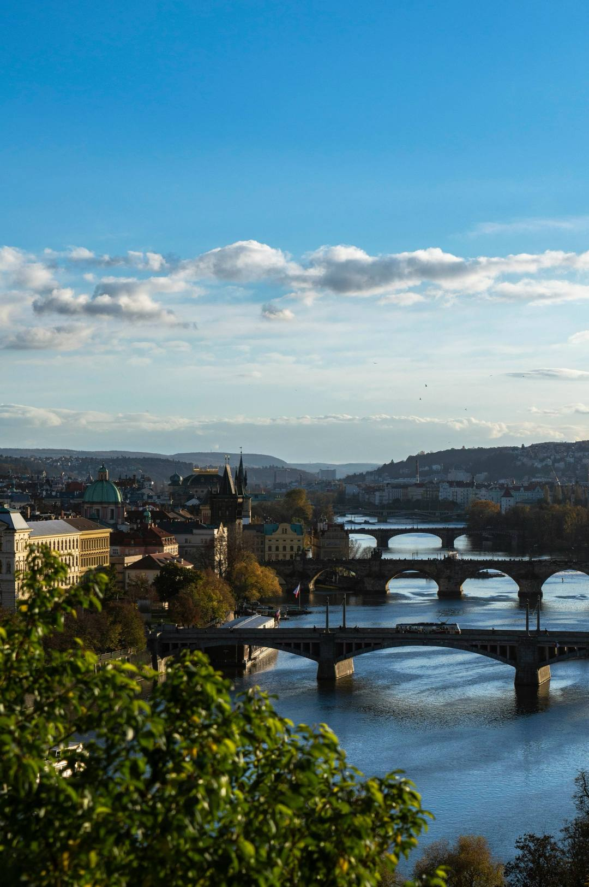
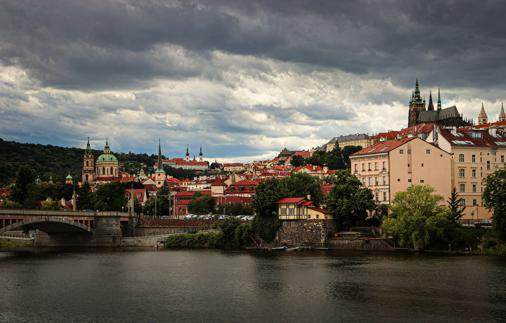
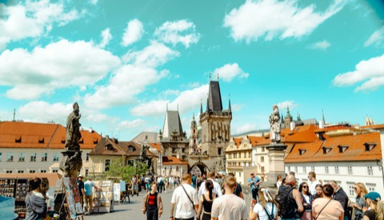
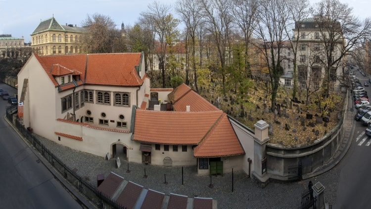

Sehenswürdigkeiten in Prag: die 20 wichtigsten, sortiert von einer Stadtführerin
Prag hat mehr Sehenswürdigkeiten, als ein Wochenende fassen kann. Diese Liste sortiert die zwanzig wichtigsten nach dem, was ich meinen Gästen zuerst zeigen würde, mit Karte, bester Uhrzeit und dem Hinweis, was kostenlos ist. Am Ende steht, was Sie sich sparen können.


Ich führe seit vielen Jahren Gäste aus Deutschland, Österreich und der Schweiz durch Prag, ausschließlich privat. Die Rangfolge unten ist meine eigene. Sie richtet sich nicht danach, was am häufigsten fotografiert wird, sondern danach, was man von Prag verstanden haben sollte, wenn man wieder abreist. Wer nur einen Tag hat, nimmt die Plätze eins bis fünf, wer drei Tage hat, kommt bis etwa Platz fünfzehn.
Alle 20 Sehenswürdigkeiten auf der Karte
Blau: kostenlos zugänglich. Rot: mit Eintritt. Ein Klick auf die Nummer führt zum Abschnitt.
Die Rangliste
1. Die Prager Burg und der Veitsdom
Die größte zusammenhängende Burganlage der Welt ist eine Stadt in der Stadt: Dom, Königspalast, Basilika St. Georg, das Goldene Gässchen und die Wachablösung um 12 Uhr. Das Areal ist frei, Eintritt kosten nur die Innenräume.
Zuzanas Tipp: Ich fahre mit meinen Gästen mit der Tram 22 hinauf und gehe dann bergab. So steht man um neun im Dom, wenn das Morgenlicht durch das Mucha-Fenster fällt. Besucher-Guide zur Prager Burg

2. Die Karlsbrücke
Seit 1357 verbindet sie Altstadt und Kleinseite, mit 30 Barockstatuen und je einem Brückenturm an beiden Enden. Tagsüber ist sie überfüllt, früh am Morgen eine der schönsten Brücken Europas.
Zuzanas Tipp: Fast niemand schaut über das Geländer zum Ritter Bruncvík oder kennt das Zahlen-Palindrom im Grundstein. Geheimtipps rund um die Karlsbrücke

3. Altstädter Ring und astronomische Uhr
Gotische Teynkirche, barocke St.-Nikolaus-Kirche, Altstädter Rathaus mit der Orloj von 1410: Auf keinem Platz der Stadt liegen so viele Jahrhunderte nebeneinander. Vom Rathausturm sehen Sie den ganzen Platz von oben.
Zuzanas Tipp: An der Uhr erkläre ich nicht die Apostel, sondern das Zifferblatt darunter: Es zeigt drei Zeiten gleichzeitig, und kaum jemand kann sie lesen.

4. Josefov, das Jüdische Viertel
Sechs Synagogen, der Alte Jüdische Friedhof mit übereinander geschichteten Gräbern und das Rathaus mit der rückwärts laufenden Uhr. In der Pinkas-Synagoge stehen die Namen von fast 80.000 Opfern der Schoah an den Wänden.
Zuzanas Tipp: Ohne Erklärung bleiben viele Gebäude hier schöne Fassaden. Das Jüdische Viertel: Geschichte und Erbe

5. Die Kleinseite und die Insel Kampa
Barockpaläste, Botschaften, Gärten und Gassen zwischen Burgberg und Moldau. Auf der Kampa trennt der Teufelsbach die Insel vom Ufer, das Mühlrad dreht sich bis heute.
Zuzanas Tipp: Mein persönlicher Lieblingsort in Prag. Wer hier ohne Plan geht, landet in der Nerudova, wer einen Plan hat, in den Gärten der Kleinseite.
6. Vyšehrad
Die Festung auf dem Felsen über der Moldau, nach der Sage der Ort, an dem Prag gegründet wurde. Auf dem Nationalfriedhof liegen Dvořák, Smetana und Mucha.
Zuzanas Tipp: Hier halten keine Reisebusse. Der Blick von den Mauern flussabwärts auf die Burg ist für mich der schönste der Stadt.
7. Das Strahov-Kloster
Prämonstratenserkloster von 1143 mit zwei barocken Bibliothekssälen, einem Kuriositätenkabinett und einer eigenen Brauerei. Die Säle sehen Sie von der Tür aus.
Zuzanas Tipp: Der ideale Start für einen Tag auf dem Burgberg, danach geht es nur noch bergab. Strahov-Kloster: Bibliothek, Aussicht, Weg

8. Der Petřín-Hügel
Ein bewaldeter Park über der Kleinseite mit Aussichtsturm von 1891, Spiegellabyrinth und Rosengarten. Hinauf fährt eine Standseilbahn mit normalem Fahrschein.
Zuzanas Tipp: Im Frühling blühen die Obstgärten am Hang, dann ist der Petřín ein eigener Ausflug. Prag im Frühling
9. Das Klementinum
Ehemaliges Jesuitenkolleg mit einem der schönsten barocken Bibliothekssäle Europas und dem Astronomischen Turm. Seit 1775 wird hier täglich das Wetter gemessen.
Zuzanas Tipp: Wer nach Strahov enttäuscht ist, die Säle nur von der Tür zu sehen, kommt hier ein Stück näher heran. Klementinum: die Barockbibliothek
10. St.-Nikolaus-Kirche auf der Kleinseite
Die bedeutendste Barockkirche Prags, gebaut von Vater und Sohn Dientzenhofer. Auf der Orgel spielte Mozart 1787, vom Glockenturm überwachte später die Staatssicherheit die Botschaften ringsum.
Zuzanas Tipp: Ich zeige meinen Gästen die Kuppel von innen und danach den Turm von außen. Erst dann versteht man, warum er für die Geheimpolizei so praktisch war.
11. Der Waldstein-Garten
Barockgarten des Feldherrn Wallenstein, heute Garten des tschechischen Senats: Sala terrena, Pfauen, Teich und die Tropfsteinwand mit Fratzen im Stein.
Zuzanas Tipp: Fünf Minuten von der Burgtreppe und trotzdem fast immer ruhig. Der Waldstein-Garten in Prag

12. Wenzelsplatz und Nationalmuseum
Eigentlich ein Boulevard, 750 Meter lang. Hier wurde 1918 die Republik gefeiert, 1969 verbrannte sich Jan Palach aus Protest, und 1989 versammelten sich Hunderttausende zur Samtenen Revolution.
Zuzanas Tipp: Ohne diese Geschichte ist der Wenzelsplatz eine Einkaufsstraße. Mit ihr ist er der wichtigste Platz des modernen Tschechiens.
13. Pulverturm und Gemeindehaus
Der gotische Pulverturm war das Tor zur Altstadt und Beginn des Krönungswegs zur Burg. Direkt daneben steht das Gemeindehaus, das schönste Jugendstilgebäude der Stadt, in dem 1918 die Unabhängigkeit ausgerufen wurde.
Zuzanas Tipp: Ins Café im Gemeindehaus kann jeder hinein. Für den Smetana-Saal braucht man eine Führung oder ein Konzertticket.
14. Loreto
Wallfahrtsort mit einer Nachbildung des Hauses der Maria aus Loreto, umgeben von Kreuzgängen. In der Schatzkammer liegt die Diamantmonstranz mit über 6.000 Diamanten.
Zuzanas Tipp: Liegt auf dem Weg vom Strahov-Kloster zur Burg und wird trotzdem von den meisten übersehen.
15. Das Tanzende Haus
1996 von Frank Gehry und Vlado Milunić gebaut, damals heftig umstritten, heute eines der bekanntesten modernen Gebäude der Stadt. Die Bar auf dem Dach hat einen weiten Blick über die Moldau.
Zuzanas Tipp: Ich verbinde es gern mit einem Spaziergang am Ufer bis zum Nationaltheater.
16. Das Nationaltheater
Von Tschechen mit Spenden gebaut, unter dem Motto „Das Volk sich selbst“. Nach einem Brand 1881 wurde es in nur zwei Jahren wieder aufgebaut.
Zuzanas Tipp: Von innen sehen Sie es am besten bei einer Oper oder einem Ballett. Karten gibt es oft noch kurzfristig.
17. Der Letná-Park
Vom Rand des Plateaus sehen Sie alle Brücken der Moldau hintereinander. Daneben liegt ein Biergarten ohne Reservierung, und dort, wo das größte Stalin-Denkmal der Welt stand, steht heute ein riesiges Metronom.
Zuzanas Tipp: Der beste kostenlose Abend in Prag.
18. Das Rudolfinum
Neorenaissance-Bau am Moldauufer, Sitz der Tschechischen Philharmonie. Im Dvořák-Saal ist der Klang so gut, dass Musiker aus der ganzen Welt hier auftreten.
Zuzanas Tipp: Wenn Sie ein klassisches Konzert hören möchten, dann hier, nicht in einer Kirche mit wechselndem Programm.
19. Das Agneskloster
Eines der ersten gotischen Bauwerke in Böhmen, gegründet von der heiligen Agnes von Böhmen. Heute zeigt die Nationalgalerie hier mittelalterliche Kunst.
Zuzanas Tipp: Fast immer leer, obwohl es nur zehn Minuten vom Altstädter Ring entfernt liegt.
20. Der Fernsehturm Žižkov
216 Meter hoch, in den 1980er Jahren gebaut und lange als hässlichstes Gebäude der Stadt verspottet. Seit 2000 klettern Babys von David Černý an ihm hinauf.
Zuzanas Tipp: Von der Aussichtsplattform sehen Sie die Altstadt aus einer Richtung, aus der sie kaum jemand kennt.
Was ich mir sparen würde
Jede Stadt hat Orte, die vor allem deshalb voll sind, weil alle anderen auch dort sind. Diese hier stehen in vielen Listen, aber nicht in meiner.
Warum eine private Führung bei diesen Orten den Unterschied macht
Die meisten Sehenswürdigkeiten auf dieser Liste können Sie allein besuchen. Was eine gute Führung ändert, ist nicht der Ort, sondern was Sie darin sehen: die drei Zeiten auf dem Zifferblatt der Orloj, den Glockenturm, aus dem die Staatssicherheit die Botschaften beobachtete, das Kreuz an der Brüstung der Karlsbrücke. Und die Reihenfolge, in der Sie die Orte erleben, bevor die Gruppen kommen.
Was meine Gäste nach der Tour schreiben, lesen Sie in den Bewertungen. Wie Sie allgemein einen guten Stadtführer erkennen, habe ich im Artikel Prag besichtigen: Stadtführer, Reiseführer oder Besichtigungsfahrt? aufgeschrieben.
Häufige Fragen
Was sind die wichtigsten Sehenswürdigkeiten in Prag?
Die Prager Burg mit dem Veitsdom, die Karlsbrücke, der Altstädter Ring mit der astronomischen Uhr, das Jüdische Viertel und die Kleinseite. Alle fünf liegen im Zentrum und sind zu Fuß erreichbar.
Welche Sehenswürdigkeiten in Prag sind kostenlos?
Das Areal der Prager Burg, die Karlsbrücke, der Altstädter Ring, die Kleinseite und Kampa, Vyšehrad, der Petřín, der Waldstein-Garten, der Wenzelsplatz, Pulverturm und Gemeindehaus von außen, das Tanzende Haus und der Letná-Park.
Wie viele Tage braucht man für die Sehenswürdigkeiten in Prag?
Für die ersten fünf zwei volle Tage, für die ersten fünfzehn drei bis vier Tage. Plätze 16 bis 20 passen gut in einen zusätzlichen Tag oder einen Abend.
Was kann man in Prag bei Regen besichtigen?
Veitsdom, Klementinum, St.-Nikolaus-Kirche, die Synagogen in Josefov, das Agneskloster und das Nationalmuseum. Mehr Ideen in der Museumsübersicht.
Weiterlesen
Offizielle Seiten für aktuelle Angaben
- Prager Burg: Öffnungszeiten und Tickets
- Jüdisches Museum Prag: Synagogen und Friedhof
- Prague City Tourism: prague.eu (Türme, Rathaus, Petřín)
- Karte: © OpenStreetMap contributors